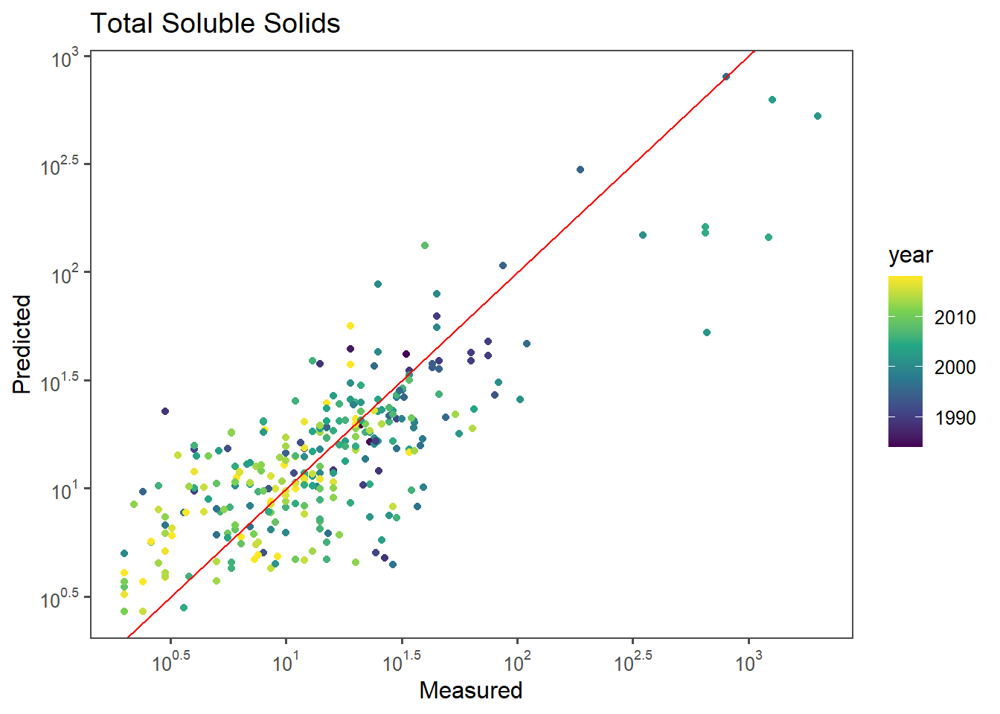

Chapter 19 Intro
A friend told me today about a term called “Grad student descent” which is a play on words with the term gradient descent, an extremely common tool used to tune hyperparameters (and parameters) for machine learning models. Grad student descent then is when that method is simply having grad students search a parameter space manually in part to improve the model, and in part to learn how these algorithms work.
Today we are trying to predict the concentrations of either chlorophyll a (CHLA)
or total suspended sediment (TSS) in the Loire River France using satellite imagery.
The grab sample data (someone grabbing water from a stream for analysis), comes
from the French electricity agency who collects this data to meet their water
quality standards.
Basically the core idea here is that water color as captured in an image tells you
something about what is in the water. If it’s green and bright (lots of light
reflected from the water), then it may have a lot of algae (Chlorophyll a is a proxy
for algal biomass). If it’s tan and bright, it may have lots of sediment. If it’s
dark and blue it’s clear!
This color information is captured in “bands” like red, blue, green etc… from the Landsat series of sate llites, which have collected data over the world since the late 70s. For this analysis we are only using Landsat 5,7, and 8, so the data goes back to 1984.
19.1 Data read
wq_sr <- read_csv('data/wq_sr.csv') %>%
mutate(year = year(date))19.2 Model development
This is the fiddly bit. The goal? Tune hyperparameters to get the lowest RMSE and the best Measured/Predicted fit (points close to the red line).
# A vector that contains all the columns I want to keep.
predictors <- c("azimuth", "blue","green", "nir" ,"red", "swir1","swir2","zenith" , "NR" ,"BR" ,"GR" , "SR" , "BG" , "BN", "BS" ,"GS" ,"GN" , "ndvi", "ndwi", 'fai', "hillshade", "hue", "bright_tot", "bright")
booster <- function(df = wq_sr,pred='CHLA',title='Chlorophyll a',
features = predictors){
non_nas <- (!is.na(df[,pred]))
#remove nas
df = df[non_nas,]
#Sample 60% of the data.
train <- df %>%
sample_frac(0.6)
#Keep only data that is not in train
#How could we make this safer (spatiotemporal robustness)
test <- df %>%
anti_join(.,train,by='index')
# Actual boosting model
ag_mod <- xgboost(data=train %>%
dplyr::select(features) %>%
as.matrix(.),
label = train %>% pull(pred) %>% log10(.),
nthread=4,
max_depth=4,
eta=0.1,
gamma = 0.0005,
nrounds=3000,
subsample = 0.5, #best_par['subsample'], # 0.5,
colsample_bytree = 0.5, #0.5,
min_child_weight = 1,
lambda = 4,
print_every_n = 100)
#Tune ntree, k, numcut, bands that you use, etc...
#apply predictions.
test <- test %>%
mutate(bpred= 10^predict(ag_mod,test %>%
dplyr::select(features) %>%
as.matrix(.)))
#Optional for log
#test[,pred] = 10^test[,pred]
#Remove NAs
test <- test %>%
filter(!is.na(pred)) %>%
as.data.frame()
error <-
tibble(rmse=Metrics::rmse(test$bpred,test[,pred]),
mdae=Metrics::mdae(test$bpred,test[,pred]),
mape=Metrics::mape(test$bpred,test[,pred]),
bias=Metrics::bias(test$bpred,test[,pred]))
g1 <- ggplot(test,
aes_string(x=pred,y='bpred',color='year')) +
geom_point() +
geom_abline(intercept=0,slope=1,color='red') +
labs(x='Measured',y='Predicted') +
theme_few() +
scale_color_viridis_c() +
scale_x_log10(breaks = trans_breaks("log10", function(x) 10^x),
labels = trans_format("log10", math_format(10^.x))) +
scale_y_log10(breaks = trans_breaks("log10", function(x) 10^x),
labels = trans_format("log10", math_format(10^.x))) +
ggtitle(title)
# returns a list of the plot (g1), the error metric (error), and the
# model (ag_mod)
return(list(g1,error,ag_mod))
}19.3 Chl-a model
set.seed(2020526) ## Makes the work reproducible, but you can hack this!
chl_boost <- booster(df = wq_sr)## [1] train-rmse:0.807480
## [101] train-rmse:0.195154
## [201] train-rmse:0.092645
## [301] train-rmse:0.048599
## [401] train-rmse:0.025711
## [501] train-rmse:0.014296
## [601] train-rmse:0.010677
## [701] train-rmse:0.009552
## [801] train-rmse:0.009064
## [901] train-rmse:0.008764
## [1001] train-rmse:0.008560
## [1101] train-rmse:0.008453
## [1201] train-rmse:0.008288
## [1301] train-rmse:0.008210
## [1401] train-rmse:0.008146
## [1501] train-rmse:0.008076
## [1601] train-rmse:0.008013
## [1701] train-rmse:0.007891
## [1801] train-rmse:0.007880
## [1901] train-rmse:0.007880
## [2001] train-rmse:0.007774
## [2101] train-rmse:0.007725
## [2201] train-rmse:0.007705
## [2301] train-rmse:0.007697
## [2401] train-rmse:0.007655
## [2501] train-rmse:0.007627
## [2601] train-rmse:0.007594
## [2701] train-rmse:0.007571
## [2801] train-rmse:0.007549
## [2901] train-rmse:0.007525
## [3000] train-rmse:0.00752019.3.1 Chl-a Model Measured/Predicted Plot
chl_boost[[1]]
19.3.2 Chl-a Error Metrics
chl_boost[[2]]## # A tibble: 1 x 4
## rmse mdae mape bias
## <dbl> <dbl> <dbl> <dbl>
## 1 24.0 5.62 1.11 -4.64chla_rmse <- chl_boost[[2]]19.4 TSS Model
19.4.1 TSS plot
boosterTSS <- function(df = wq_sr,pred='TSS',title='Total Soluble Solids',
features = predictors){
non_nas <- (!is.na(df[,pred]))
#remove nas
df = df[non_nas,]
#Sample 60% of the data.
train <- df %>%
sample_frac(0.6)
#Keep only data that is not in train
#How could we make this safer (spatiotemporal robustness)
test <- df %>%
anti_join(.,train,by='index')
# Actual boosting model
ag_mod <- xgboost(data=train %>%
dplyr::select(features) %>%
as.matrix(.),
label = train %>% pull(pred) %>% log10(.),
nthread=4,
max_depth=4,
eta=0.1,
gamma = 0.1,
nrounds=3000,
subsample = 0.5, #best_par['subsample'], # 0.5,
colsample_bytree = 0.5, #0.5,
min_child_weight = 1,
lambda = 5,
print_every_n = 100)
#Tune ntree, k, numcut, bands that you use, etc...
#apply predictions.
test <- test %>%
mutate(bpred= 10^predict(ag_mod,test %>%
dplyr::select(features) %>%
as.matrix(.)))
#Optional for log
#test[,pred] = 10^test[,pred]
#Remove NAs
test <- test %>%
filter(!is.na(pred)) %>%
as.data.frame()
error <-
tibble(rmse=Metrics::rmse(test$bpred,test[,pred]),
mdae=Metrics::mdae(test$bpred,test[,pred]),
mape=Metrics::mape(test$bpred,test[,pred]),
bias=Metrics::bias(test$bpred,test[,pred]))
g1 <- ggplot(test,
aes_string(x=pred,y='bpred',color='year')) +
geom_point() +
geom_abline(intercept=0,slope=1,color='red') +
labs(x='Measured',y='Predicted') +
theme_few() +
scale_color_viridis_c() +
scale_x_log10(breaks = trans_breaks("log10", function(x) 10^x),
labels = trans_format("log10", math_format(10^.x))) +
scale_y_log10(breaks = trans_breaks("log10", function(x) 10^x),
labels = trans_format("log10", math_format(10^.x))) +
ggtitle(title)
# returns a list of the plot (g1), the error metric (error), and the
# model (ag_mod)
return(list(g1,error,ag_mod))
}
tss_boost <- boosterTSS(pred = 'TSS',df = wq_sr)## [1] train-rmse:0.737117
## [101] train-rmse:0.156652
## [201] train-rmse:0.129522
## [301] train-rmse:0.121215
## [401] train-rmse:0.116040
## [501] train-rmse:0.113935
## [601] train-rmse:0.112079
## [701] train-rmse:0.111084
## [801] train-rmse:0.110297
## [901] train-rmse:0.109100
## [1001] train-rmse:0.108357
## [1101] train-rmse:0.107843
## [1201] train-rmse:0.107067
## [1301] train-rmse:0.106735
## [1401] train-rmse:0.105701
## [1501] train-rmse:0.105212
## [1601] train-rmse:0.104514
## [1701] train-rmse:0.103799
## [1801] train-rmse:0.103749
## [1901] train-rmse:0.103360
## [2001] train-rmse:0.102857
## [2101] train-rmse:0.102138
## [2201] train-rmse:0.101915
## [2301] train-rmse:0.101780
## [2401] train-rmse:0.101651
## [2501] train-rmse:0.101641
## [2601] train-rmse:0.101307
## [2701] train-rmse:0.100744
## [2801] train-rmse:0.100744
## [2901] train-rmse:0.100598
## [3000] train-rmse:0.100501tss_boost[[1]]
19.4.2 TSS Evaluation
tss_boost <- boosterTSS(pred = 'TSS',df = wq_sr)## [1] train-rmse:0.779401
## [101] train-rmse:0.156995
## [201] train-rmse:0.130562
## [301] train-rmse:0.121306
## [401] train-rmse:0.116323
## [501] train-rmse:0.114077
## [601] train-rmse:0.112449
## [701] train-rmse:0.111461
## [801] train-rmse:0.109415
## [901] train-rmse:0.108153
## [1001] train-rmse:0.107462
## [1101] train-rmse:0.107111
## [1201] train-rmse:0.106575
## [1301] train-rmse:0.105644
## [1401] train-rmse:0.105481
## [1501] train-rmse:0.105205
## [1601] train-rmse:0.104811
## [1701] train-rmse:0.104260
## [1801] train-rmse:0.103887
## [1901] train-rmse:0.103375
## [2001] train-rmse:0.103026
## [2101] train-rmse:0.102755
## [2201] train-rmse:0.101707
## [2301] train-rmse:0.101710
## [2401] train-rmse:0.101640
## [2501] train-rmse:0.101492
## [2601] train-rmse:0.101179
## [2701] train-rmse:0.100810
## [2801] train-rmse:0.100663
## [2901] train-rmse:0.100487
## [3000] train-rmse:0.100422tss_boost[[2]]## # A tibble: 1 x 4
## rmse mdae mape bias
## <dbl> <dbl> <dbl> <dbl>
## 1 77.2 4.87 0.531 4.21tss_rmse <- tss_boost[[2]]
tss_rmse$rmse## [1] 77.1626